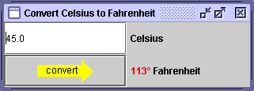

CelsiusConverterCelsiusConverterTopics illustrated in this example: Now that we've examinedCelsiusConverter, let's improve it. First, we'll spiff it up by adding colored text. Next, we'll improve the button by making it the default button and adding a graphic. Finally, we'll refine the text field so that only numbers are accepted.Adding HTML
You can specify the appearance of any Swing component's text in a couple of ways. First, you can call thesetFontmethod to specify the font and thesetColormethod to set the color. Second, when you want to vary the font or color within the text or insert formatting such as line breaks, you can use HTML tags.Buttons, labels, and many other Swing components let you use HTML to specify the format of the text displayed by the component. The following figure shows a revised temperature converter,
CelsiusConverter2, which uses HTML to specify multiple text colors on thefahrenheitLabel. The code follows the figure. To use HTML in a component's text, simply place the<HTML>tag at the beginning of the text string and then use any valid HTML code in the remainder of the string. The preceding code uses the code><font> tag to specify text color and the HTML code°to display the degree symbol. More information on adding HTML to components is available in Using HTML in Swing Components.
Note: Some older releases don't support HTML text in buttons. In those that don't (such as Swing 1.1) putting HTML in a button results in an ugly-looking button whose label starts with<HTML>. You can find out when HTML support was added to each component by consulting the Version Note in Using HTML in Swing Components.Adding an Icon
Some Swing components can be decorated with an icon — a fixed-size image. A Swing icon is an object that adheres to theIconinterface. Swing provides a particularly useful implementation of theIconinterface:ImageIcon, which paints an icon from a GIF, JPEG, or PNG image. Here's the code that adds the arrow graphic to theconvertTempbutton:TheImageIcon convertIcon = createImageIcon("images/convert.gif", "Convert temperature"); ... convertTemp = new JButton(icon);createImageIconmethod (used in the preceding snippet) is one we use in many of our code samples. The first argument specifies the file to load. The second argument provides a description of the icon that assistive technologies can use. For details, see How to Use Icons.Setting the Default Button
Only one button in a top-level container can be the default button. The default button typically has a highlighted appearance and acts as though clicked whenever the top-level container has the keyboard focus and the user presses the Enter (or Return) key. The exact implementation depends on the look and feel.We made the
convertTempbutton the default button with the following code:Invoking//Set the button to be default button in the frame. converterFrame.getRootPane().setDefaultButton(convertTemp);getRootPane().setDefaultButtonon a top-level container, such asconverterFrame(aJFrame) makes the specified button the default for that container. You might be wondering what a root pane is. Well, every top-level container has one--it works behind the scenes to manage details such as the content pane and the menu bar. You generally don’t need to know anything more about root panes to use Swing components.Creating a Formatted Text Field
In the originalCelsiusConverterapplication, you could enter alphabetic or special characters in the text field. If the Convert button was pressed when the text was invalid, aNumberFormatExceptionwas thrown and theFahrenheitLabelwas not updated.
CelsiusConverter2prevents the user from entering anything but a number by replacing theJTextFieldwith aJFormattedTextField. Formatted text fields were added in v1.4. They provide a way for developers to easily specify the legal set of characters that can be entered into a text component. In the following code, we usejava.text.DecimalFormatto ensure that the text field accepts only numbers.Formatted text fields are covered in depth in How to Use Formatted Text Fields.//Create the format for the text field and the formatted text field tempCelsius = new JFormattedTextField( new java.text.DecimalFormat("##0.0#"));
CelsiusConverter
LunarPhases